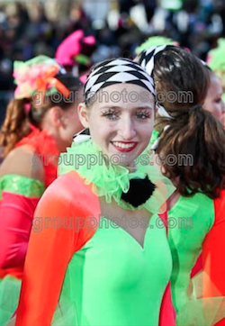

Homepage
| My Dog
| My Future
Early Life
Let's start at the beginning, shall we? I was born on October 9th, 1995 and have lived my whole life in Westbrook, ME. I grew up with my mom, Denise, dad, Peter, and older sister, Erin. Growing up, my mom was a social worker, but has recently been going back to her original passion, working in IS for Maine Medical Center. My dad has always been an electrician, and starting when I was about 5 years old, he began teaching it at the Westbrook Regional Vocational Center. Erin, who is two years older than me, just graduated last spring from UMaine with degrees in English and History. She wants to be an author. When I was born, we had a black lab, named Nicki. She was already 3 or 4 by the time I came along, and she lived until I was 10 or 11. She was definitely the smartest dog I've ever seen. A few years later, we got Maggie from a family friend. Compared to Nick, she is a total idiot. She is intelligent, she is just so incredibly not bright (last month she scared herself and ran through the wall of our portable garage). If you want to see some pictures of her, click here!

Activities
Growing up, I tried every sport under the sun (at least it seems like that) before I really began getting into soccer, tennis, and competitive dance. I played soccer from the time I could walk all the way up to high school. We didn't have a jr. high tennis team, so I couldn't play too much until high school, but I played all throughout and ended up as co-captain senior year! I didn't actually start dance until I was a 7th grader (most people start around kindergarten), but 2 years later, I started competing, and then a year after that, I was selected to participate in the Macy's Thanksgiving Day Parade! Aside from sports, I really like reading, baking, and having fun with my friends.
College Life
This is my third year here at UMaine, but only my first as a Business Management student. I started out studying Romance Languages, then switched to math, then to accounting, before finally deciding to stick it out with Business Management. My theory is this is the most generic degree I can get, and as I have essentially no idea what I want to do after graduation, this will provide me with a broad skill set applicable to many different fields. My problem is I like everything and I'm pretty good at almost all of them. Outside of academics, I am a very busy person. I have been president of Tap Club on campus for the past year and a half, along with participating in other dance clubs. I am a brother of Phi Sigma Pi National Honors Fraternity, a sister of Kappa Delta Phi National Affiliated Sorority, a part of Alternative Breaks, and an employee of the Tutor Program on campus.